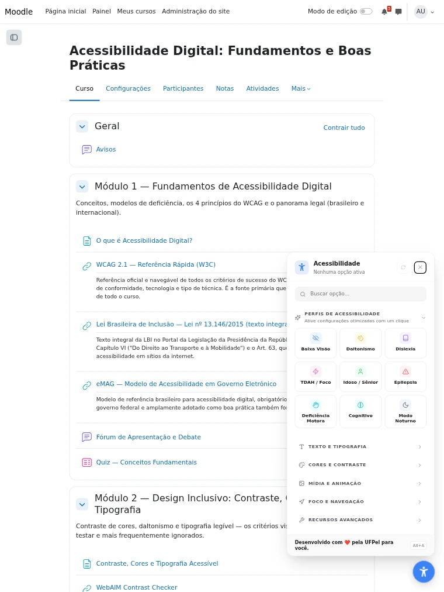
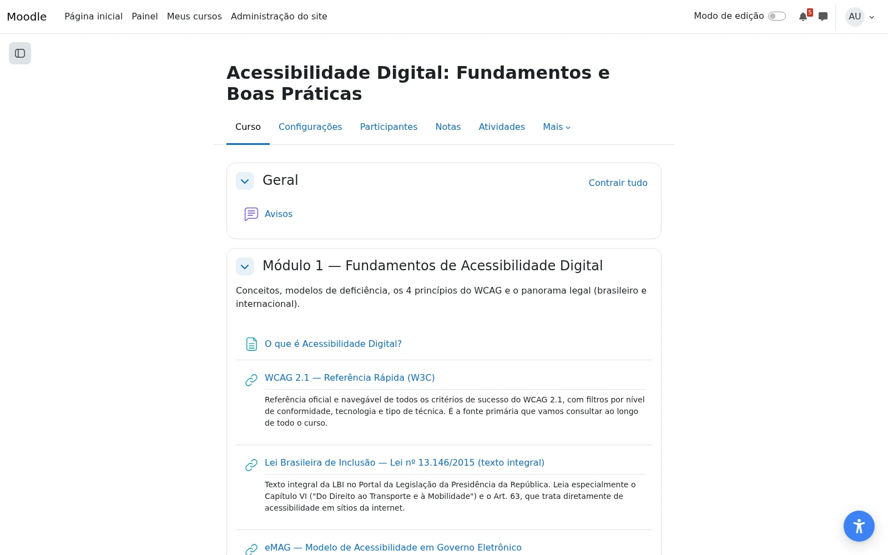
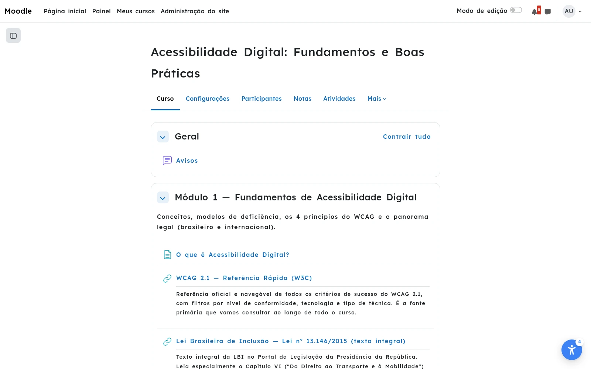

Manual Do Usuário
A11y for Moodle
Guia prático de uso do painel de acessibilidade do Moodle — para estudantes, docentes, tutores e demais pessoas usuárias.
Controle de versão do documento
| Versão | Data | Descrição | Status |
|---|---|---|---|
| 1.0 | 02/09/2026 | Primeira versão consolidada a partir do material institucional, técnico e de exploração ao vivo disponível sobre o plugin. | Rascunho para validação |
| 1.1 | 03/09/2026 | Revisão a partir da verificação direta do repositório de código-fonte do plugin (GitHub). Corrige o comportamento de uma opção e adiciona o botão de ajuda "?" à descrição da interface. | Rascunho para validação |
| 1.2 | 03/09/2026 | Segunda revisão, mais profunda: o plugin evoluiu de 24 para 30 opções (6 novas, 2 que passaram de interruptor para múltiplos níveis), passou a integrar com Libras (VLibras), e a versão pública foi promovida para 1.0.0/Stable. | Rascunho para validação |
Este documento foi elaborado a partir do material institucional consolidado do plugin (estudos, código-fonte, arquivos de idioma e exploração ao vivo do ambiente de demonstração). Trechos sem evidência suficiente estão sinalizados como "[INFORMAÇÃO A VALIDAR]" e devem ser confirmados pela equipe responsável antes da publicação oficial.
1. Sobre o plugin
O que é: o A11y for Moodle é um plugin — uma extensão — que adiciona um botão de acessibilidade a qualquer página do Moodle. Com ele, você ajusta como o conteúdo é exibido e utilizado (texto, cores, contraste, navegação e muito mais) do jeito que funciona melhor para você.
Para que serve: para você personalizar sua própria experiência de uso do Moodle, sem depender de outras pessoas ou de programas extras instalados no seu computador.
Quem pode utilizar: qualquer pessoa que acesse o Moodle — estudantes, docentes, tutores e até visitantes que ainda não fizeram login.
Você não precisa pedir permissão nem fazer nenhum cadastro especial para usar o plugin. O botão já está disponível assim que você abre uma página do Moodle.
Este manual explica onde encontrar o plugin, o que cada opção faz e como resolver as dúvidas mais comuns. Se você preferir aprender fazendo, vá direto para a Seção 5 (Tutoriais passo a passo).
2. Como acessar
No computador
O botão de acessibilidade fica fixo em um dos cantos da tela, visível em qualquer página do Moodle — inclusive na tela inicial, dentro de um curso ou durante uma atividade.
Clique no botão para abrir o painel. Clique novamente (ou no X) para fechar.
Atalho de teclado: pressione Alt+A em qualquer lugar da página para abrir ou fechar o painel sem usar o mouse.
No tablet e no celular
O botão também aparece em telas de tablet e celular, adaptado ao tamanho da tela. Toque no botão para abrir o painel.
Em celulares e tablets pequenos, o painel sempre abre no formato de gaveta lateral — o formato mais adequado a telas pequenas —, independentemente de como o formato do painel esteja configurado pela instituição para telas de computador.


Posição e aparência do botão
A posição, o ícone e o formato do botão podem variar de uma instituição para outra, pois são definidos pela equipe de tecnologia da informação nas configurações administrativas do Moodle. Se você não encontrar o botão no canto onde esperava, ele pode estar em outro canto da tela — veja a Seção 8 para outras causas possíveis.
3. Conhecendo a interface
Ao abrir o painel, você encontra os seguintes elementos:
| Elemento | Para que serve | Como utilizar |
|---|---|---|
| Botão de acessibilidade | Abre e fecha o painel. | Clique ou toque nele; ou pressione Alt+A. |
| Campo de busca | Encontra uma opção pelo nome, sem precisar abrir cada categoria. | Digite parte do nome da opção; a lista se filtra automaticamente. |
| Seção de Perfis | Aplica, com um toque, um conjunto de opções prontas para uma necessidade específica. | Toque no perfil desejado. |
| Categorias (5) | Organizam as 30 opções em grupos: Texto e Tipografia, Cores e Contraste, Mídia e Animação, Foco e Navegação, Recursos Avançados. | Toque no nome da categoria para abrir ou recolher o grupo de opções. |
| Contador de opções ativas | Mostra quantas opções estão ligadas no momento. | Apenas informativo — não é clicável. |
| Botão "Restaurar padrões" | Desliga todas as opções e volta ao estado original, de fábrica. | Toque para restaurar tudo de uma vez. |
| Botão fechar | Fecha o painel. | Toque no X, pressione Esc, ou use o atalho Alt+A. |
| Botão de ajuda ("?") | Mostra instruções de uso mais detalhadas do que a descrição curta ao lado da opção. Disponível em 6 opções: Leitor de Tela, Teclado Virtual, Comandos por Voz, Navegação por Face, Guia de Leitura e Máscara de Leitura. | Toque no "?" ao lado do nome da opção. |

O painel é totalmente operável pelo teclado: use Tab para mover entre os elementos, Enter ou Espaço para selecionar, e Esc para fechar. Veja mais na Seção 7.
4. Recursos disponíveis
O plugin reúne 9 perfis prontos e 30 opções individuais, organizadas em 5 categorias. Esta seção descreve cada um deles. Se preferir ir direto ao ponto, use o campo de busca do próprio painel ou consulte a Seção 8 ("Como faço para...").
Uma dessas 30 opções — "Libras (VLibras)" — só aparece no seu painel se a sua instituição também usa o VLibras e um administrador optou por integrá-lo aqui. Se você não a vir, é esperado: veja a observação na categoria "Mídia e Animação".
Como os controles funcionam
Antes de conhecer cada opção, vale entender os dois tipos de controle usados no painel:
Interruptores (ligar/desligar): a maioria das opções funciona como um interruptor. Selecione uma vez para ativar; selecione de novo para desativar. O visual do controle muda para indicar se está ligado ou desligado.
Níveis (vários graus): algumas opções — como Tamanho do Texto, Contraste, Altura da Linha, Cursor e Modo Foco — funcionam em níveis. Cada seleção avança para o próximo nível; ao chegar no último, a seleção seguinte volta ao nível Padrão (ou Desligado). O nível atual aparece escrito ao lado do nome da opção.
Não sabe por onde começar? Experimente primeiro um perfil pronto (próxima seção) e depois ajuste opções individuais, se quiser refinar o resultado.
Perfis de Acessibilidade
O que faz: aplica, com um único toque, um conjunto de opções já combinado para uma necessidade de acesso específica — e desliga o que não faz parte daquele conjunto, para não misturar ajustes de perfis diferentes.
Como utilizar:
Passo 1 — Abra o painel de acessibilidade.
Passo 2 — Na seção "Perfis de Acessibilidade", observe os nove cartões disponíveis.
Passo 3 — Toque no perfil que melhor descreve o que você precisa.
Resultado esperado: a página muda imediatamente, aplicando todas as opções daquele perfil. O contador de opções ativas, no topo do painel, mostra quantas opções foram ligadas.
Observações: você pode ajustar opções individualmente depois de aplicar um perfil — isso não desfaz o perfil, apenas adiciona ou remove um ajuste específico. Para sair completamente de um perfil, use "Restaurar padrões" (Seção 3) ou escolha outro perfil.
| Perfil | Para quem é | O que ativa |
|---|---|---|
| Baixa Visão | Texto maior, alto contraste, cursor destacado. | Tamanho do Texto (Grande) · Contraste (Alto) · Cursor (Preto grande) · Destacar Links · Destacar Botões |
| Daltonismo | Filtro de cores e links destacados. | Mudar Cores (Deuteranopia) · Destacar Links · Saturação (Alta) |
| Dislexia | Fonte amigável, espaçamento e guia de leitura. | Fonte para Dislexia (nível Lexend) · Espaçamento do Texto (Médio) · Altura da Linha (1,8×) · Guia de Leitura |
| TDAH / Foco | Máscara de leitura, modo foco e animações pausadas. | Máscara de Leitura · Modo Foco (Leitura confortável) · Pausar Animações |
| Idoso / Sênior | Fonte legível, texto maior, botões destacados. | Fonte Legível · Tamanho do Texto (Médio) · Destacar Botões · Cursor (Preto grande) · Altura da Linha (1,5×) |
| Epilepsia | Sem movimento, saturação baixa, ambiente calmo. | Pausar Animações · Saturação (Baixa) · Contraste (Escuro) |
| Deficiência Motora | Cursor grande, botões destacados e dicas. | Cursor (Preto grande) · Destacar Botões · Dicas de Ferramentas |
| Cognitivo | Modo foco, fonte legível, sem distrações. | Modo Foco (Leitura confortável) · Pausar Animações · Fonte Legível · Altura da Linha (1,8×) |
| Modo Noturno | Contraste escuro e baixa saturação. | Contraste (Escuro) · Saturação (Baixa) |


Texto e Tipografia
Opções que ajustam a fonte, o tamanho, o espaçamento e o alinhamento do texto.
Fonte Legível
O que faz: Troca a fonte do texto pela Atkinson Hyperlegible, desenhada para diferenciar letras facilmente confundíveis (como "I", "l" e "1").
Como utilizar: Abra o painel de acessibilidade, toque em "Texto e Tipografia" para abrir a categoria e selecione "Fonte Legível". Toque novamente para desativar.
Resultado esperado: O texto de toda a página passa a usar essa fonte.
Fonte para Dislexia
O que faz: Troca a fonte do texto por uma de duas fontes pesquisadas para dislexia.
Como utilizar: Abra o painel de acessibilidade, toque em "Texto e Tipografia" e selecione "Fonte para Dislexia" repetidamente para alternar entre os níveis: Desligado → Lexend → OpenDyslexic. Continuar selecionando volta ao nível Padrão.
Resultado esperado: O texto de toda a página passa a usar a fonte escolhida.
Observações: Não use ao mesmo tempo que "Fonte Legível" — as duas alteram a mesma fonte; a última selecionada prevalece.
Destacar Títulos
O que faz: Aumenta a evidência visual dos títulos da página.
Como utilizar: Abra o painel de acessibilidade, toque em "Texto e Tipografia" para abrir a categoria e selecione "Destacar Títulos". Toque novamente para desativar.
Resultado esperado: Os títulos ficam visualmente mais evidentes que o restante do texto.
Destacar Links
O que faz: Aumenta a evidência visual dos links.
Como utilizar: Abra o painel de acessibilidade, toque em "Texto e Tipografia" para abrir a categoria e selecione "Destacar Links". Toque novamente para desativar.
Resultado esperado: Os links ficam mais fáceis de identificar em meio ao texto.
Destacar Botões
O que faz: Aumenta a evidência visual dos botões.
Como utilizar: Abra o painel de acessibilidade, toque em "Texto e Tipografia" para abrir a categoria e selecione "Destacar Botões". Toque novamente para desativar.
Resultado esperado: Os botões da página ficam mais fáceis de localizar.
Tamanho do Texto
O que faz: Aumenta o tamanho de todo o texto da página.
Como utilizar: Abra o painel de acessibilidade, toque em "Texto e Tipografia" e selecione "Tamanho do Texto" repetidamente para alternar entre os níveis: Padrão → 4 níveis crescentes. Continuar selecionando volta ao nível Padrão.
Resultado esperado: O texto fica maior a cada seleção, até o nível máximo.
Altura da Linha
O que faz: Aumenta o espaço entre uma linha de texto e outra.
Como utilizar: Abra o painel de acessibilidade, toque em "Texto e Tipografia" e selecione "Altura da Linha" repetidamente para alternar entre os níveis: Padrão → 1,5× → 1,8× → 2,2×. Continuar selecionando volta ao nível Padrão.
Resultado esperado: Fica mais fácil acompanhar a linha durante a leitura, especialmente em parágrafos longos.
Espaçamento do Texto
O que faz: Aumenta o espaço entre as letras.
Como utilizar: Abra o painel de acessibilidade, toque em "Texto e Tipografia" e selecione "Espaçamento do Texto" repetidamente para alternar entre os níveis: Padrão → 3 níveis crescentes. Continuar selecionando volta ao nível Padrão.
Resultado esperado: As letras ficam mais distantes entre si, o que pode facilitar a leitura.
Espaçamento entre Palavras
O que faz: Aumenta o espaço entre as palavras — de forma independente do espaçamento entre letras, acima.
Como utilizar: Abra o painel de acessibilidade, toque em "Texto e Tipografia" e selecione "Espaçamento entre Palavras" repetidamente para alternar entre os níveis: Padrão → 3 níveis crescentes. Continuar selecionando volta ao nível Padrão.
Resultado esperado: As palavras ficam mais distantes entre si.
Alinhamento do Texto
O que faz: Ajusta o alinhamento do texto do conteúdo.
Como utilizar: Abra o painel de acessibilidade, toque em "Texto e Tipografia" e selecione "Alinhamento do Texto" repetidamente para alternar entre os níveis: Padrão → Esquerda → Centralizado → Direita → Justificado. Continuar selecionando volta ao nível Padrão.
Resultado esperado: O alinhamento do texto da página muda a cada seleção, conforme o nível escolhido.
Leitura Biônica
O que faz: Escurece o início de cada palavra, proporcionalmente ao tamanho dela, para guiar o olho durante a leitura — o restante da palavra continua com o peso normal.
Como utilizar: Abra o painel de acessibilidade, toque em "Texto e Tipografia" para abrir a categoria e selecione "Leitura Biônica". Toque novamente para desativar.
Resultado esperado: As primeiras letras de cada palavra da página ficam em negrito.
Observações: Tem um botão de ajuda ("?") com mais detalhes. Não afeta a leitura por leitores de tela (cada palavra continua sendo lida por inteiro) nem atua em formulários, questões de questionário, o editor de texto, fórmulas do MathJax ou o teclado virtual. O próprio plugin observa que a eficácia da técnica para velocidade ou compreensão de leitura não é comprovada de forma consistente — o efeito é só visual.
Cores e Contraste
Opções que ajustam cores, contraste, saturação e luz azul da página.
Contraste
O que faz: Ajusta o contraste entre o texto e o fundo da página.
Como utilizar: Abra o painel de acessibilidade, toque em "Cores e Contraste" e selecione "Contraste" repetidamente para alternar entre os níveis: Padrão → Escuro → Claro → Alto. Continuar selecionando volta ao nível Padrão.
Resultado esperado: A página muda de aparência a cada nível — o nível Alto oferece a maior diferença entre texto e fundo.
Inverter Cores
O que faz: Inverte as cores exibidas na página (como um "negativo" fotográfico).
Como utilizar: Abra o painel de acessibilidade, toque em "Cores e Contraste" para abrir a categoria e selecione "Inverter Cores". Toque novamente para desativar.
Resultado esperado: As cores da página são invertidas.
Mudar Cores
O que faz: Aplica um filtro de cor pensado para os três tipos mais comuns de daltonismo.
Como utilizar: Abra o painel de acessibilidade, toque em "Cores e Contraste" e selecione "Mudar Cores" repetidamente para alternar entre os níveis: Padrão → Protanopia → Deuteranopia → Tritanopia. Continuar selecionando volta ao nível Padrão.
Resultado esperado: As cores da página são ajustadas conforme o filtro escolhido.
Observações: O filtro se aplica a toda imagem da página, sem distinção — inclusive imagens que comunicam informação por cor, como a legenda de um gráfico ou um mapa de calor. Se você não souber qual tipo escolher, experimente os três.
Saturação
O que faz: Ajusta a intensidade das cores da página.
Como utilizar: Abra o painel de acessibilidade, toque em "Cores e Contraste" e selecione "Saturação" repetidamente para alternar entre os níveis: Padrão (Normal) → Alta → Baixa → Mono (preto e branco). Continuar selecionando volta ao nível Padrão.
Resultado esperado: As cores ficam mais ou menos intensas a cada nível; o nível Mono remove a cor por completo.
Filtro de Luz Azul
O que faz: Reduz a luz azul da tela, de forma parecida com o "modo noturno" de celulares.
Como utilizar: Abra o painel de acessibilidade, toque em "Cores e Contraste" e selecione "Filtro de Luz Azul" repetidamente para alternar entre os níveis: Desligado → Sutil → Médio → Forte. Continuar selecionando volta ao nível Padrão.
Resultado esperado: A tela ganha um tom mais quente, mais forte a cada nível.
Não foi localizada, no material disponível, uma verificação formal e publicada das razões de contraste (contrast ratio) de cada um dos quatro níveis de Contraste. Se você depende de um nível mínimo de contraste certificado, considere testar as opções diretamente antes de confiar apenas nesta descrição.
Mídia e Animação
Opções que reduzem estímulos visuais e sonoros na tela — e, quando disponível, o acesso à tradução em Libras.
Ocultar Imagens
O que faz: Substitui imagens e vídeos da página por um indicador de "oculto" — inclusive vídeos incorporados do YouTube e Vimeo.
Como utilizar: Abra o painel de acessibilidade, toque em "Mídia e Animação" para abrir a categoria e selecione "Ocultar Imagens". Toque novamente para desativar.
Resultado esperado: As imagens e vídeos somem da tela e são substituídos por um indicador.
Observações: O texto ao redor continua visível normalmente. Isso vale para todo mundo, inclusive imagens que carregam informação (um diagrama, um gráfico) — não há como manter só essas visíveis.
Pausar Animações
O que faz: Interrompe animações e transições da interface, congela GIFs animados, e pausa vídeos com reprodução automática (ou que já estejam tocando).
Como utilizar: Abra o painel de acessibilidade, toque em "Mídia e Animação" para abrir a categoria e selecione "Pausar Animações". Toque novamente para desativar.
Resultado esperado: Elementos que se moviam na tela param de se mover; vídeos param de tocar.
Silenciar Mídia
O que faz: Silencia e pausa áudio com reprodução automática; silencia vídeos com reprodução automática (inclusive incorporados do YouTube e Vimeo) — sem necessariamente pausá-los.
Como utilizar: Abra o painel de acessibilidade, toque em "Mídia e Animação" para abrir a categoria e selecione "Silenciar Mídia". Toque novamente para desativar.
Resultado esperado: O som para. Vídeos podem continuar se movendo, mas sem áudio.
Observações: Tem um botão de ajuda ("?") com mais detalhes. Se quiser que o vídeo também pare de se mover, ative "Pausar Animações" também. Desativar esta opção não volta a ligar o som sozinho — só evita silenciar mídia nova a partir daí.
Dicas de Ferramentas
O que faz: Exibe um texto explicativo quando você passa o cursor sobre um elemento da interface.
Como utilizar: Abra o painel de acessibilidade, toque em "Mídia e Animação" para abrir a categoria e selecione "Dicas de Ferramentas". Toque novamente para desativar.
Resultado esperado: Uma pequena legenda aparece perto do elemento apontado.
Libras (VLibras)
O que faz: Mostra ou oculta, dentro do próprio painel, o acesso ao VLibras — tradutor público de Libras mantido pelo governo federal (vlibras.gov.br).
Como utilizar: Abra o painel de acessibilidade, toque em "Mídia e Animação" para abrir a categoria e selecione "Libras (VLibras)". Toque novamente para desativar.
Resultado esperado: Um botão de acesso ao VLibras aparece (ou some) dentro do painel de acessibilidade.
Observações: Tem um botão de ajuda ("?") com mais detalhes. Ao usar a tradução, o conteúdo é processado pelo serviço público VLibras, fora da infraestrutura da sua instituição — veja a Seção 7.
Esta opção só aparece no seu painel se a sua instituição também tiver o VLibras instalado e um administrador tiver optado por integrá-lo a este plugin. Se você não a vê, sua instituição pode simplesmente não ter feito essa integração — o que não impede necessariamente que o VLibras exista em outro lugar da página, fora deste painel.
Foco e Navegação
Opções que ajudam a manter a atenção no conteúdo, a se localizar na página e a enxergar detalhes pequenos.
Guia de Leitura
O que faz: Exibe uma linha horizontal que acompanha o cursor do mouse verticalmente pela tela, ajudando a manter o lugar durante a leitura.
Como utilizar: Abra o painel de acessibilidade, toque em "Foco e Navegação" para abrir a categoria e selecione "Guia de Leitura". Toque novamente para desativar.
Resultado esperado: Uma linha aparece e se move junto com o cursor do mouse.
Observações: Esta opção tem um botão de ajuda ("?") ao lado do nome, com instruções adicionais.
Máscara de Leitura
O que faz: Mantém visível apenas uma faixa ao redor do cursor, escurecendo o restante da tela.
Como utilizar: Abra o painel de acessibilidade, toque em "Foco e Navegação" para abrir a categoria e selecione "Máscara de Leitura". Toque novamente para desativar.
Resultado esperado: A tela escurece, exceto por uma faixa que acompanha o cursor.
Observações: Esta opção tem um botão de ajuda ("?") ao lado do nome, com instruções adicionais.
Lupa
O que faz: Uma lupa circular acompanha o cursor e amplia o conteúdo sob ela — texto, imagens e tabelas.
Como utilizar: Abra o painel de acessibilidade, toque em "Foco e Navegação" para abrir a categoria e selecione "Lupa". Toque novamente para desativar.
Resultado esperado: A área ao redor do cursor aparece ampliada, em uma lente circular.
Observações: Tem um botão de ajuda ("?") com mais detalhes. Use as setas do teclado para mover a lupa sem precisar do mouse; use + e − para ajustar o zoom (2×, 3× ou 4×); pressione Esc para desligar a qualquer momento.
Cursor
O que faz: Aumenta o tamanho do cursor do mouse.
Como utilizar: Abra o painel de acessibilidade, toque em "Foco e Navegação" e selecione "Cursor" repetidamente para alternar entre os níveis: Padrão → Grande preto → Grande branco. Continuar selecionando volta ao nível Padrão.
Resultado esperado: O cursor do mouse fica visivelmente maior, na cor escolhida.
Modo Foco
O que faz: Simplifica a página, removendo elementos não essenciais da interface.
Como utilizar: Abra o painel de acessibilidade, toque em "Foco e Navegação" e selecione "Modo Foco" repetidamente para alternar entre os níveis: Padrão → Sem distrações → Leitura confortável → Somente texto. Continuar selecionando volta ao nível Padrão.
Resultado esperado: A página fica mais limpa a cada nível — no nível mais alto ("Somente texto"), praticamente só o conteúdo principal permanece.
Observações: No nível "Somente texto", a opção "Ocultar Imagens" é ativada automaticamente junto, e fica temporariamente travada enquanto esse nível estiver ativo — é esperado, não um erro.
Recursos Avançados
Os quatro recursos a seguir vão além do ajuste visual e funcionam de um jeito um pouco diferente das demais opções — por isso, cada um tem um passo a passo próprio. Os quatro também têm um botão de ajuda ("?") ao lado do nome, no painel, com um lembrete rápido das instruções abaixo.
Leitor de Tela (texto para fala)
O que faz: Lê em voz alta o texto que você escolher, usando a tecnologia de conversão de texto em fala do seu navegador.
Como utilizar:
Passo 1 — Ative "Leitor de Tela" na categoria Recursos Avançados.
Passo 2 — Clique em qualquer texto da página que você queira ouvir.
Passo 3 — Para interromper, toque no indicador "Lendo…" que aparece na tela, ou no botão "Parar".
Resultado esperado: O texto escolhido é lido em voz alta, com um indicador visual mostrando que a leitura está em andamento.
Observações: O volume da leitura segue o volume do seu dispositivo. Se não ouvir nada, confira se o som do computador ou celular está ligado.
Teclado Virtual
O que faz: Mostra um teclado na tela, para você digitar sem precisar de um teclado físico.
Como utilizar:
Passo 1 — Ative "Teclado Virtual" na categoria Recursos Avançados.
Passo 2 — Toque no campo de texto onde você quer digitar (por exemplo, uma caixa de resposta ou de busca).
Passo 3 — Toque nas teclas exibidas na tela para digitar. Uma fileira com acentuação do português brasileiro (á, é, í, ó, ú, ã, õ, ç, â, ê) fica sempre disponível.
Resultado esperado: O texto digitado no teclado virtual aparece no campo selecionado, como se você tivesse usado um teclado físico.
Observações: O teclado virtual digita apenas no campo selecionado. Se nada acontecer, confirme se você tocou dentro de um campo de texto antes de usar o teclado.
Comandos por Voz
O que faz: Permite controlar opções do plugin usando comandos falados.
Como utilizar:
Passo 1 — Ative "Comandos por Voz" na categoria Recursos Avançados.
Passo 2 — Leia o aviso que aparece, explicando que — dependendo do seu navegador — o áudio captado pode ser enviado a um serviço remoto de reconhecimento de fala, não operado pela sua instituição, e confirme se quiser continuar.
Passo 3 — Quando solicitado, permita que o navegador use o microfone.
Passo 4 — Fale um comando — por exemplo, para aumentar o texto, ativar alto contraste ou fechar o painel.
Resultado esperado: O navegador reconhece o comando falado e o plugin aplica a ação correspondente.
Observações: Sem permissão de microfone, o recurso não funciona. Você pode recusar o aviso ou negar a permissão sem prejudicar nenhuma outra parte do plugin.
Navegação por Face
O que faz: Permite controlar o cursor do mouse com movimentos da cabeça, sem usar as mãos.
Como utilizar:
Passo 1 — Ative "Navegação por Face" na categoria Recursos Avançados.
Passo 2 — Leia o aviso que aparece, explicando que a imagem da câmera é processada inteiramente no seu navegador e nunca é enviada a este site ou a qualquer outro lugar, e confirme se quiser continuar.
Passo 3 — Quando solicitado, permita que o navegador use a câmera.
Passo 4 — Movimente a cabeça para mover o cursor na tela. Para clicar, abra a boca ou pisque com os dois olhos.
Resultado esperado: O cursor passa a seguir os movimentos da sua cabeça, captados pela câmera.
Observações: Sem permissão de câmera, o recurso não funciona. Você pode recusar o aviso ou negar a permissão sem prejudicar nenhuma outra parte do plugin.
5. Tutoriais passo a passo
Estes tutoriais reúnem, em sequência, os passos das tarefas mais comuns. Para a explicação completa de cada opção, veja a Seção 4.
Abrir o painel de acessibilidade pela primeira vez
Objetivo: Localizar e abrir o painel de acessibilidade em qualquer página do Moodle.
Passo 1 — Acesse qualquer página do Moodle.
Passo 2 — Localize o botão de acessibilidade, fixo em um dos cantos da tela.
Passo 3 — Clique ou toque no botão (ou pressione Alt+A).
Resultado: O painel se abre, mostrando o campo de busca, a seção de perfis e as cinco categorias de opções.
Ativar um perfil pronto (exemplo: Dislexia)
Objetivo: Aplicar, com um toque, um conjunto de opções voltado à leitura para pessoas com dislexia.
Passo 1 — Abra o painel de acessibilidade.
Passo 2 — Na seção de perfis, localize o cartão "Dislexia".
Passo 3 — Toque no cartão "Dislexia".
Resultado: A página aplica imediatamente a Fonte para Dislexia, o Espaçamento do Texto, a Altura da Linha e a Guia de Leitura. O contador de opções ativas mostra "4 opções ativas".
Aumentar o tamanho do texto
Objetivo: Deixar o texto da página maior.
Passo 1 — Abra o painel de acessibilidade.
Passo 2 — Toque na categoria "Texto e Tipografia" para abri-la.
Passo 3 — Selecione "Tamanho do Texto" quantas vezes forem necessárias, até atingir o nível desejado.
Resultado: O texto da página aumenta a cada seleção, até o nível máximo.
Buscar uma opção específica
Objetivo: Encontrar rapidamente uma opção sem precisar abrir cada categoria manualmente.
Passo 1 — Abra o painel de acessibilidade.
Passo 2 — Toque no campo de busca, no topo do painel.
Passo 3 — Digite parte do nome da opção — por exemplo, "contraste".
Resultado: O painel mostra apenas as opções que combinam com o texto digitado, com as categorias correspondentes já abertas.
Usar o Leitor de Tela
Objetivo: Ouvir um texto da página em voz alta.
Passo 1 — Abra o painel de acessibilidade e toque na categoria "Recursos Avançados".
Passo 2 — Ative "Leitor de Tela".
Passo 3 — Clique no texto que deseja ouvir.
Resultado: O texto escolhido é lido em voz alta, com um indicador "Lendo…" na tela e um botão para interromper.
Usar o Teclado Virtual
Objetivo: Digitar em um campo do Moodle sem usar um teclado físico.
Passo 1 — Abra o painel de acessibilidade e toque na categoria "Recursos Avançados".
Passo 2 — Ative "Teclado Virtual".
Passo 3 — Toque no campo onde deseja digitar e, em seguida, toque nas teclas exibidas na tela.
Resultado: O texto digitado no teclado virtual aparece no campo selecionado.
Usar a Navegação por Face
Objetivo: Controlar o cursor do mouse com movimentos da cabeça, sem usar as mãos.
Passo 1 — Abra o painel de acessibilidade e toque na categoria "Recursos Avançados".
Passo 2 — Ative "Navegação por Face" e permita o uso da câmera quando solicitado.
Passo 3 — Movimente a cabeça para mover o cursor; abra a boca ou pisque com os dois olhos para clicar.
Resultado: O cursor passa a responder aos movimentos da cabeça, permitindo navegar e clicar sem mouse ou teclado.
Restaurar todas as configurações padrão
Objetivo: Desligar todas as opções ativas e voltar a página ao estado original.
Passo 1 — Abra o painel de acessibilidade.
Passo 2 — Localize o botão "Restaurar padrões", no topo do painel.
Passo 3 — Toque no botão.
Resultado: Todas as opções e perfis são desativados de uma vez, e a página volta à aparência original.
6. Personalização
Você pode combinar livremente qualquer uma das 30 opções descritas na Seção 4 — não é preciso escolher apenas um perfil pronto. Um bom ponto de partida é ativar um perfil e, depois, ajustar opções individuais para refinar o resultado ao seu gosto.
Combine quantas opções quiser: elas não se cancelam, exceto quando afetam exatamente a mesma característica (por exemplo, "Fonte Legível" e "Fonte para Dislexia" alteram a mesma fonte, então a última selecionada prevalece).
Use o campo de busca para encontrar e ajustar uma opção específica sem precisar abrir cada categoria.
Se você estiver com a sessão iniciada (login feito), suas escolhas ficam salvas na sua conta e valem em qualquer computador ou celular em que você acessar o Moodle.
Se você não estiver com a sessão iniciada, suas escolhas ficam guardadas apenas no navegador que você está usando naquele momento.
Para voltar tudo ao padrão original, use o botão "Restaurar padrões" (Seção 3).
A aparência e a posição do próprio botão de acessibilidade (canto da tela, ícone, formato) não são personalizáveis por você — elas são definidas pela equipe de TI da sua instituição para toda a instalação do Moodle.
7. Uso com tecnologias assistivas
Esta seção documenta apenas recursos confirmados no material disponível sobre o plugin.
Teclado
O atalho Alt+A abre e fecha o painel de qualquer página, sem precisar do mouse.
Dentro do painel, use Tab para mover entre os elementos (busca, perfis, categorias, opções, botões) e Enter ou Espaço para selecionar.
Pressione Esc para fechar o painel a qualquer momento; o foco volta para o botão de acessibilidade.
Enquanto o painel está aberto, a navegação por Tab permanece dentro dele (não "escapa" para o restante da página por engano).
Leitores de tela
O painel foi desenvolvido com suporte a leitores de tela: elementos anunciam seu estado (por exemplo, se uma opção está ativa), e mudanças de opção são anunciadas automaticamente. Essa é a meta de desenvolvimento documentada para o painel (padrão WCAG 2.2 nível AA), verificada por uma varredura interna com a ferramenta axe-core, sem violações críticas ou graves reportadas.
Não foi localizada, no material disponível, uma confirmação de testes com leitores de tela específicos (como NVDA, JAWS ou VoiceOver). Se você utiliza um desses programas, recomendamos relatar sua experiência à equipe responsável (Seção 12) para ajudar a validar essa compatibilidade.
Ampliação
O plugin amplia o tamanho do texto (opção "Tamanho do Texto", em 4 níveis) e, separadamente, oferece a Lupa: uma lente circular que amplia (2×, 3× ou 4×) o que estiver sob o cursor — texto, imagens e tabelas —, operável também pelo teclado. Veja a Seção 4 (Foco e Navegação).
Contraste
As opções "Contraste" (4 níveis), "Inverter Cores", "Saturação" (4 níveis, incluindo Mono/preto e branco) e "Filtro de Luz Azul" (4 níveis) ajudam a adaptar a página a diferentes necessidades de contraste e conforto visual. Veja a Seção 4 para o detalhamento de cada uma.
Navegação
Além do atalho Alt+A, o Modo Foco (3 níveis) reduz elementos na tela para ajudar na concentração, e a Guia de Leitura e a Máscara de Leitura ajudam a manter o lugar durante a leitura. Veja a Seção 4 (Foco e Navegação).
Comunicação
Quando disponível (Seção 4, "Libras (VLibras)"), o plugin pode centralizar, dentro do próprio painel, o acesso ao VLibras — tradutor público de Libras. Ao usar a tradução, o conteúdo passa a ser processado pelo serviço público VLibras (vlibras.gov.br), fora da infraestrutura da sua instituição.
8. Situações comuns ("Como faço para...")
Como ativar um recurso?
Abra o painel de acessibilidade, localize a opção (por categoria ou pelo campo de busca) e selecione-a. Veja a Seção 4.
Como desativar um recurso?
Selecione a mesma opção novamente. Para opções de vários níveis, continue selecionando até voltar ao nível Padrão.
Como alterar uma configuração já ativa?
Abra o painel, localize a opção e selecione-a até chegar no nível desejado (para opções de níveis) ou desative e ative outra opção equivalente (para interruptores simples).
Como restaurar a configuração original?
Toque no botão "Restaurar padrões", no topo do painel. Isso desliga todas as opções de uma vez. Veja o tutorial na Seção 5.
Onde encontro uma opção específica?
Use o campo de busca no topo do painel, ou abra a categoria correspondente (Texto e Tipografia, Cores e Contraste, Mídia e Animação, Foco e Navegação, Recursos Avançados).
Como sei quantas opções estão ativas?
O contador no topo do painel mostra quantas opções estão ligadas no momento.
Minhas escolhas continuam se eu sair e voltar?
Sim, se você estiver com a sessão iniciada (login), suas escolhas ficam salvas na conta. Se você não estiver logado, elas ficam apenas no navegador utilizado. Veja a Seção 6.
Como uso o plugin sem o mouse?
Pressione Alt+A para abrir o painel e use Tab, Enter/Espaço e Esc para navegar e selecionar. Veja a Seção 7.
9. Problemas e soluções
| Problema | Possível causa | Solução |
|---|---|---|
| O botão de acessibilidade não aparece. | O plugin pode estar desativado para essa página ou instituição, ou a exibição para visitantes pode estar desligada. | Tente acessar com login. Se o problema continuar, contate o suporte (Seção 12). |
| Minhas preferências sumiram. | Você trocou de navegador ou de dispositivo sem estar com a sessão iniciada, ou está em uma aba anônima/privada. | Faça login antes de personalizar; assim suas escolhas passam a valer em qualquer dispositivo (Seção 6). |
| A Navegação por Face não funciona. | Permissão de câmera não concedida, ou o navegador/dispositivo não tem câmera disponível. | Verifique as permissões de câmera do navegador para o site do Moodle e tente novamente. |
| Os Comandos por Voz não respondem. | Permissão de microfone não concedida, ou o navegador utilizado não suporta a tecnologia de reconhecimento de voz. | Verifique as permissões de microfone do navegador; se possível, teste em outro navegador atualizado. |
| O Leitor de Tela não lê o texto. | O clique não foi feito diretamente sobre o texto, ou o volume do dispositivo está no mudo. | Clique diretamente sobre a frase ou parágrafo desejado e confira o volume do dispositivo. |
| O Teclado Virtual não digita no campo certo. | Nenhum campo de texto estava selecionado antes de tocar nas teclas. | Toque primeiro dentro do campo de texto desejado e, em seguida, use o teclado virtual. |
| O painel abre em um perfil diferente do que eu escolhi da última vez. | A preferência não foi salva (sessão não iniciada) ou "Restaurar padrões" foi usado anteriormente. | Faça login para manter suas preferências salvas entre sessões (Seção 6). |
| Duas opções parecem se cancelar. | Algumas opções alteram a mesma característica (por exemplo, as duas opções de fonte); a última selecionada prevalece. | Ative apenas uma das opções conflitantes por vez. Veja a observação na Seção 4. |
10. Perguntas frequentes
Preciso instalar alguma coisa para usar o plugin?
Não. O plugin já está integrado ao Moodle da instituição; basta acessar qualquer página e usar o botão de acessibilidade.
O plugin funciona no celular?
Sim, o botão e o painel se adaptam a telas menores. Veja a Seção 2.
O plugin funciona sem internet?
Não. Como o plugin faz parte do Moodle, ele depende da mesma conexão com a internet necessária para acessar o Moodle.
O plugin substitui o leitor de tela do meu computador ou celular?
Não necessariamente. O Leitor de Tela do plugin é um recurso de "clique para ouvir" dentro do Moodle. Se você já usa um leitor de tela do sistema operacional (como NVDA, JAWS ou VoiceOver), pode continuar usando-o normalmente junto com o plugin.
Outras pessoas veem que eu ativei um perfil ou opção?
Não. As opções que você ativa mudam apenas o que aparece na sua própria tela — elas não alteram o que outras pessoas veem na mesma página.
Minhas escolhas ficam salvas?
Sim. Se você estiver com a sessão iniciada, suas escolhas ficam salvas na sua conta e valem em qualquer dispositivo. Se não estiver logado, elas ficam apenas no navegador utilizado. Veja a Seção 6.
O plugin coleta dados sobre como eu o uso?
Não. O plugin não mantém estatísticas de uso nem telemetria. A única informação guardada é a sua própria preferência de acessibilidade, e apenas para aplicá-la da próxima vez que você acessar o Moodle.
O plugin funciona em qualquer navegador?
Os recursos usados (leitura em voz alta, reconhecimento de voz, filtros de imagem) são tecnologias padrão de navegadores modernos e atualizados. A validar Não há, no material disponível, uma lista oficial de navegadores homologados.
O plugin tem versão em Libras?
O plugin em si não traduz para Libras. Mas ele pode integrar, dentro do seu próprio painel, o acesso ao VLibras — tradutor público de Libras do governo federal —, se a sua instituição já usa essa outra ferramenta e um administrador optou por ativar a integração. Veja "Libras (VLibras)" na Seção 4.
11. Glossário
| Termo | Significado |
|---|---|
| Moodle | Ambiente Virtual de Aprendizagem (AVA) utilizado pela UFPel para cursos a distância e apoio a disciplinas presenciais. |
| Plugin | Uma extensão que adiciona uma funcionalidade nova a um sistema já existente — neste caso, ao Moodle. |
| Botão de acessibilidade | O botão flutuante, fixo em um dos cantos da tela, que abre e fecha o painel do plugin. |
| Painel | A janela que se abre ao acionar o botão de acessibilidade, com busca, perfis e categorias de opções. |
| Perfil de Acessibilidade | Um conjunto pronto de opções, voltado a uma necessidade de acesso específica, aplicado com um único toque. |
| Interruptor (toggle) | Tipo de controle que liga ou desliga uma opção — veja a Seção 4. |
| Nível (stepper) | Tipo de controle que alterna entre vários graus de uma mesma opção (por exemplo, os quatro níveis de Contraste). |
| Contraste | A diferença de luminosidade entre o texto e o fundo da página; quanto maior o contraste, mais fácil costuma ser distinguir o texto. |
| Saturação | A intensidade das cores exibidas; saturação baixa aproxima a imagem do preto e branco. |
| Daltonismo | Dificuldade de distinguir determinadas cores. Protanopia, Deuteranopia e Tritanopia são três tipos distintos, cada um afetando a percepção de cores de um jeito diferente. |
| Dislexia | Dificuldade específica de leitura, que pode ser amenizada por fontes, espaçamento e guias de leitura adequados. |
| TDAH | Transtorno de Déficit de Atenção e Hiperatividade — pode se beneficiar de recursos que reduzem distrações, como o Modo Foco. |
| Leitor de tela (TTS) | Recurso que converte texto em áudio (texto para fala / text-to-speech). |
| Modo Foco | Opção que oculta elementos não essenciais da interface, para reduzir distrações. |
| Navegação por Face | Recurso que usa a câmera do dispositivo para controlar o cursor do mouse com movimentos da cabeça. |
| Leitura Biônica | Técnica que escurece o início de cada palavra para guiar o olho durante a leitura. |
| VLibras | Tradutor público de Libras (Língua Brasileira de Sinais) mantido pelo governo federal, que este plugin pode integrar dentro do próprio painel. |
| Persistência | A capacidade de o plugin lembrar suas escolhas de uma visita para outra. |
| Sessão iniciada (login) | Estar autenticado no Moodle com usuário e senha, em vez de acessar como visitante. |
12. Suporte
O plugin é desenvolvido e mantido pela CPTED — Coordenação de Políticas e Tecnologias para EaD, vinculada ao Gabinete da Vice-Reitoria da UFPel —, com autoria de Rodrigo Padilha Silveira e Jerônimo Medina Madruga.
O material disponível não define um canal institucional específico (e-mail, formulário, sistema de chamados) para relatar problemas ou pedir ajuda sobre o plugin. Recomenda-se que a equipe responsável indique aqui o canal oficial antes da publicação deste manual.
Enquanto esse canal não é definido, procure a coordenação ou o setor de TI responsável pelo Moodle na sua unidade, informando:
o que você estava tentando fazer;
o que aconteceu (ou deixou de acontecer);
o navegador e o dispositivo utilizados;
se possível, uma captura de tela do painel no momento do problema.
Manual elaborado a partir de material institucional e técnico consolidado sobre o plugin A11y for Moodle. Sujeito a revisão e validação final pela equipe responsável antes de sua adoção como documentação oficial.